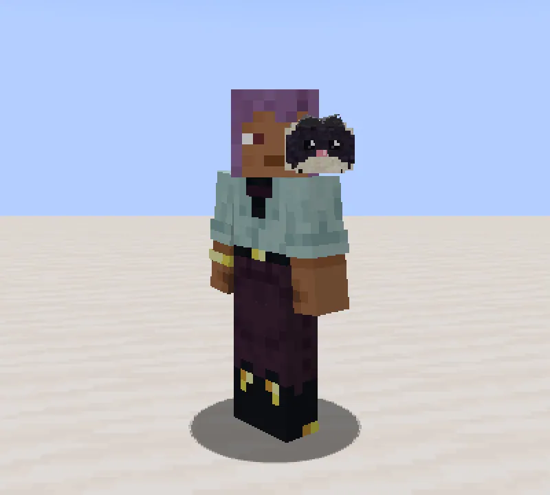
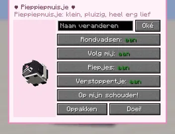
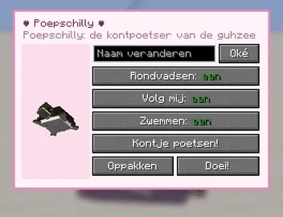
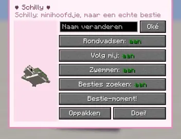

Piep piep!
A tiny plush mouse (about a third of a block): dark purple, with a fluffy cream band round its tummy, a cream chin, a shiny pink nose and felt ears. It lives in the lieve guh buildings of the Guhmension: roughly one muisje for every ten guhs in a guh house, a village, the Knuffeldal town and so on. Never in Mika places, never in the kaasknabbel-nest, and never in the Barbecuether (not lief enough there). It scurries about, peeps (five real piep recordings) and runs to kaasknabbels lying on the ground to nibble them.
Een piepklein pluchen muisje (zo'n derde blok): donkerpaars, met een pluizig crème bandje om zijn buik, een crème kinnetje, een glimmend roze neusje en vilten oortjes. Het woont in de lieve guhgebouwen van de Guhmensie: ongeveer één muisje per tien guhs in een guhhuis, een dorp, het Knuffeldal-stadje enzovoort. Nooit bij de Mika's, nooit in het kaasknabbel-nest, en nooit in de Barbecuether (daar is het niet lief genoeg). Het scharrelt rond, piept (vijf echte piepopnames) en rent naar kaasknabbels die op de grond liggen om eraan te knabbelen.
- SizeGrootte
- ~1/3 blockblok
- SpawnsSpawnt
- 1 in 10 guhs, lieve buildings1 op 10 guhs, lieve gebouwen
- TameTemmen
- kaasknabbel (1 in 3)kaasknabbel (1 op 3)

Taming, shoulder, pocketTemmen, schouder, broekzak
- Aaien: right-click with an empty hand. The muisje peeps happily (the Guhdex counts every aai).Aaien: rechtsklik met een lege hand. Het muisje piept blij (de Guhdex telt elke aai).
- Tame it with a kaasknabbel: 1 in 3 per knabbel, or always when you are Lief kijken (see the koek). Then it follows you.Tem het met een kaasknabbel: 1 op 3 per knabbel, of altijd als je Lief kijkt (zie de koek). Daarna loopt het achter je aan.
- Pick it up: sneak + right-click your own muisje. It becomes an item that keeps its name and everything.Oppakken: sluip + rechtsklik je eigen muisje. Het wordt een voorwerp dat zijn naam en alles onthoudt.
- With that item: right-click a block and it hops off there; right-click in the air and it climbs onto your shoulder, looking where you look. Sneak + right-click a block with an empty hand and it hops down again. If you die, it jumps off in time.Met dat voorwerp: rechtsklik op een blok en het hopt daar neer; rechtsklik in de lucht en het klimt op je schouder en kijkt mee waar jij kijkt. Sluip + rechtsklik met een lege hand op een blok en het hopt er weer af. Ga je dood, dan springt het er op tijd af.
Piep: little menus, picking up, and kontpoetsenPiep: menuutjes, oppakken en kontpoetsen

Pieppiepmuisje
Rondvadsen, Volg mij, Piepjes, Verstoppertje and Op mijn schouder!Rondvadsen, Volg mij, Piepjes, Verstoppertje en Op mijn schouder!

Poepschilly
Rondvadsen, Volg mij, Zwemmen and Kontje poetsen!Rondvadsen, Volg mij, Zwemmen en Kontje poetsen!

Schilly
Rondvadsen, Volg mij, Zwemmen, Besties zoeken and Bestie-moment!Rondvadsen, Volg mij, Zwemmen, Besties zoeken en Bestie-moment!
- Click your own pieppiepmuisje, Poepschilly or Schilly with an empty hand: a heart, and its own little menu: rename it, switch rondvadsen, following, peeping, verstoppertje, swimming or bestie-seeking on and off, and the big button.Klik je eigen pieppiepmuisje, Poepschilly of Schilly aan met een lege hand: een hartje, en zijn eigen menuutje: geef het een naam, zet rondvadsen, volgen, piepen, verstoppertje, zwemmen of besties zoeken aan en uit, en de grote knop.
- Pick up the turtles too now (sneak + right-click, or Oppakken): they become an item that keeps their name and everything. Right-click a block to put them back.Nu kun je ook de schildpadjes oppakken (sluip + rechtsklik, of Oppakken): ze worden een voorwerp dat hun naam en alles onthoudt. Rechtsklik op een blok om ze terug te zetten.
- Kontpoetsen works on your own tamed guhs now: press Kontje poetsen! and click a guh. Poepschilly waddles to its kontje, crawls in (it tickles! guh guh guhhh), scrubs for five seconds with soap bubbles and sparkles, and pops out again: the guh is Fris van binnen and blushes. Bestie-moment! works the same way for Schilly.Kontpoetsen werkt nu op je eigen tamme guhs: druk op Kontje poetsen! en klik een guh aan. Poepschilly waggelt naar zijn kontje, kruipt erin (het kriebelt! guh guh guhhh), poetst vijf seconden met zeepbelletjes en fonkels, en ploept er weer uit: de guh is Fris van binnen en bloost. Bestie-moment! werkt zo ook voor Schilly.
- The five turtle quests moved to the FTB chapter Onderwater (section Schildpadjes).De vijf schildpadquests zijn verhuisd naar het FTB-hoofdstuk Onderwater (onderdeel Schildpadjes).